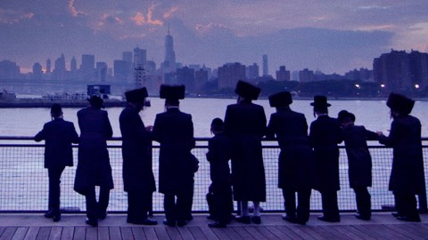
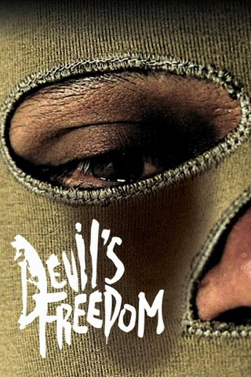

Double Exposure 2017
The third edition: October 19-22, 2017 · In person.
Venues: The National Portrait Gallery, National Union Building, The Loft @ 600 F, The Naval Heritage Center
Programme source: the 2017 festival catalogue (PDF, in the Wayback Machine) and the festival website.
War, conflict & the militaryWhistleblowers & leaksLegal & safety for reportersFunding & distributionRace & civil rightsDisinformation & truthReligionWomen, gender & sexuality
Films

One of UsHeidi Ewing, Rachel GradyOpening Night No Stone UnturnedAlex GibneyCenterpiece
No Stone UnturnedAlex GibneyCenterpiece VoyeurMyles Kane, Josh KouryClosing Night
VoyeurMyles Kane, Josh KouryClosing Night Cocaine PrisonVioleta Ayala2017 · 78 min
Cocaine PrisonVioleta Ayala2017 · 78 min
Devil's Freedom (La Libertad del Diablo)Everardo González2017 · 74 min Did You Wonder Who Fired the Gun?Travis Wilkerson2017 · 70 min
Did You Wonder Who Fired the Gun?Travis Wilkerson2017 · 70 min End of TruthEric Matthies, Tricia Todd2017 · 58 min
End of TruthEric Matthies, Tricia Todd2017 · 58 min Hall of MirrorsEna Talakic, Ines Talakic2017 · 87 min
Hall of MirrorsEna Talakic, Ines Talakic2017 · 87 min The Other Side of EverythingMila Turajlic2017 · 100 min
The Other Side of EverythingMila Turajlic2017 · 100 min The Rape of Recy TaylorNancy Buirski2017 · 91 min
The Rape of Recy TaylorNancy Buirski2017 · 91 min Trust WHOLilian Franck2017 · 85 min
Trust WHOLilian Franck2017 · 85 min
Forum sessions and events
Thursday, October 19, 2017
- Thu Oct 19 · 9:30 AMConversationOpening Conversation - Calculated Chaos: The Real Take on Fake NewsCharles Lewis, Jane Mayer, Matt Thompson
- Thu Oct 19 · 10:30 AMPanelProtecting Sources & Subjects in a (Newly) Hostile EnvironmentLyric Cabral, Laura Handman, Sonia Kennebeck, Brian Knappenberger, Mike Thomson
- Thu Oct 19 · 1:00 PMPanelFuture Imperfect: Storytelling on the Cutting EdgeDebra Anderson, Opeyemi Olukemi, Sarah Wolozin, Wendy Levy
- Thu Oct 19 · 2:45 PMPanelRapid Response in the Age of TrumpHeather Courtney, Thomas Jennings, Sheila Leddy, Eric Rich, Raney Aronson-Rath
- Thu Oct 19 · 4:15 PMConversationClosing Conversation - Gimme Shelter: Icarus and The New York TimesDan Cogan, Bryan Fogel, Rebecca Ruiz, Edwin Rios
Friday, October 20, 2017
- Fri Oct 20 · 9:30 AMConversationOpening Conversation: Taking FOIA to FilmAssia Boundaoui, Nina Gilden Seavey, Topher Sanders
- Fri Oct 20 · 10:30 AMPanelEmbedded: From Cinema Verité to Immersive JournalismAnas Aremeyaw Anas, Everardo González, Ed Klaris, Suki Kim, Ted Conover
- Fri Oct 20 · 12:45 PMPanelYou Are Here: Storytelling from the Ground UpDeborah Esquenazi, Amy Hobby, Logan Jaffe, Amy Mitchell, Ricardo Sandoval-Palos
- Fri Oct 20 · 2:15 PMPanelFireworks: Meet the FundersWendy Ettinger, Rebecca Lichtenfeld, Richard Logan, Carrie Lozano, Simon Kilmurry
- Fri Oct 20 · 3:00 PMPanelGive/Get: Cross-Sector Collaboration in Film and JournalismCaty Borum Chattoo, Clare Chambers, Katerina Cizek, Saleem Khan, James West, Barbie Zelizer, Patricia Aufderheide
- Fri Oct 20 · 3:15 PMPanelFireworks: Meet the Online PlatformsKasia Cieplak-Mayr von Baldegg, Lindsay Crouse, Bryce J. Renninger, Simon Kilmurry
- Fri Oct 20 · 4:30 PMConversationAnatomy of a Serial: Closing Conversation with Ryan White and Jean Wehner, The KeepersRyan White, Jean Wehner, Gilbert Cruz
- Fri Oct 20 · 5:30 PMReceptionReception: Hosted by the International Documentary Association and the MacArthur Foundation
Saturday, October 21, 2017
- Sat Oct 21 · 9:30 AMEventPro Bono Legal Clinic for Visual StorytellersTheodore Frank, Laura Handman, Ed Klaris, Jesselyn Radack, Katie Townsend
- Sat Oct 21 · 9:30 AMWorkshopSafe+Secure Filmmaker Workshop, in Association with Doc SocietyJudith Matloff, Jess Search
- Sat Oct 21 · 10:00 AMWorkshopIntroduction to Immersive Journalism – Part ISaleem Khan, Saleem Khan
- Sat Oct 21 · 1:30 PMWorkshopFact Checking Workshop, Presented by the Pulitzer Center on Crisis ReportingEleanor Bell Fox, Lindsay Crouse, Hilke Schellmann, Steve Sapienza
- Sat Oct 21 · 1:30 PMWorkshopPlaying Your Way to ImpactJessica Clark, Angelica Das
- Sat Oct 21 · 1:30 PMWorkshopSafeguarding Sources: A Practical Guide for Investigative FilmmakersInes Hofmann Kanna, Sonia Kennebeck
Date not listed
- EventDX Access
People
Filmmakers 15
- Violeta Ayala
- Nancy Buirski
- Heidi Ewing
- Lilian Franck
- Alex Gibney
- Everardo González
- Rachel Grady
- Myles Kane
- Josh Koury
- Eric Matthies
- Ena Talakic
- Ines Talakic
- Tricia Todd
- Mila Turajlic
- Travis Wilkerson
Moderators 11
- Raney Aronson-Rath
- Patricia Aufderheide
- Ted Conover
- Gilbert Cruz
- Simon Kilmurry
- Wendy Levy
- Edwin Rios
- Topher Sanders
- Ricardo Sandoval-Palos
- Matt Thompson
- Mike Thomson
Panelists & speakers 59
- Anas Aremeyaw Anas
- Debra Anderson
- Nathalie Applewhite
- Kasia Cieplak-Mayr von Baldegg
- Assia Boundaoui
- Lyric Cabral
- Clare Chambers
- Caty Borum Chattoo
- Katerina Cizek
- Dan Cogan
- Heather Courtney
- Lindsay Crouse
- N’Jeri Eaton
- Deborah Esquenazi
- Wendy Ettinger
- Bryan Fogel
- Theodore Frank
- Alex Gibney
- Erica Ginsberg
- Jon-Sesrie Goff
- Everardo González
- Rachel Grady
- Laura Handman
- Amy Hobby
- Logan Jaffe
- Will Jenkins
- Thomas Jennings
- Sonia Kennebeck
- Saleem Khan
- Suki Kim
- Ed Klaris
- Brian Knappenberger
- Sheila Leddy
- Charles Lewis
- Rebecca Lichtenfeld
- Richard Logan
- Carrie Lozano
- Ruth Marcus
- Jane Mayer
- Mark Mazzetti
- Amy Mitchell
- Jill Mosebach
- Opeyemi Olukemi
- Dan O’Meara
- Jesselyn Radack
- Jane Ray
- Bryce J. Renninger
- Eric Rich
- Rebecca Ruiz
- Steve Sapienza
- Jess Search
- Nina Gilden Seavey
- Katie Townsend
- Paul Waters
- Jean Wehner
- James West
- Ryan White
- Sarah Wolozin
- Barbie Zelizer
Workshop leaders 9
- Jessica Clark
- Lindsay Crouse
- Angelica Das
- Eleanor Bell Fox
- Ines Hofmann Kanna
- Sonia Kennebeck
- Saleem Khan
- Judith Matloff
- Hilke Schellmann